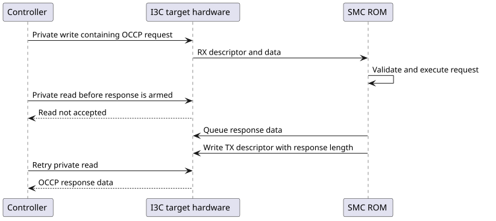

1. Communication interfaces
The ROM enables the same target-interface set for every strap role:
-
I3C controllers 0, 1, and 3; and
-
I2C controllers 0 and 1.
I3C2 remains disabled in the software interface map.
The BOOT_I2C, BOOT_RECOVERY, and PRIMARY_CHIPLET straps are observable state but do not change this map.
1.1. Address selection
I3C controllers 0, 1, and 3 use eFuse identifier slots 0, 1, and 3.
The eFuse driver reads each slot as two 32-bit words but caches it in a 32-bit field, so the current ROM passes only the low 32 bits onward.
I2C controllers 0 and 1 take the low seven bits of slots 6 and 7.
An I2C value outside 0x08 through 0x77 is replaced with 0x55.
If a selected eFuse slot is zero, the ROM forms a fallback identifier by ORing the four-bit chip ID from straps with CHIP_CONFIG.CHIP_ID << 5.
The same fallback function is used for I2C and I3C slots.
I3C channels are started in subordinate mode. I2C channels are initialized in target mode.
1.2. Driver selection
The default I3C target symbols are weak. Their initialization functions succeed so the ROM remains linkable without an active I3C implementation, while their data methods report a hardware error and their receive-availability method reports no data. An adopter ROM FW build can replace those symbols with a strong driver.
Setting I3C_CORE=swap at build time enables the open MIPI HCI/I3CCSR implementation in i3c_hci_driver.c.
That implementation configures the target transaction interface, static address, dynamic-address-assignment acceptance, queue thresholds, and open-drain timing.
The HCI path reaches the pads through the LSIO selection and therefore leaves the GPIO hardware-function override clear. Every non-HCI build enables the GPIO hardware-function override for the I3C pad set before driver initialization, whether it uses the weak default or a strong platform driver. The ROM does not program GPIO drive strength from eFuses.
1.3. I3C response flow control
The HCI target implementation advertises a response only after response data is available. For responses that fit in the transmit queue, it writes all data and then writes the transmit descriptor. For larger responses, it fills the queue, writes the descriptor when the queue first becomes full, and continues filling as hardware drains data. The target hardware does not accept a private read until its response-start threshold is met.

The HCI receive implementation separately tracks each inbound frame’s descriptor length and unconsumed bytes. That accounting persists across the OCCP layer’s header and body reads and supports exact incomplete/oversized-frame reporting. See [occp-protocol] for the packet binding and controller-visible errors.
1.4. GPIO side effects
During OCCP initialization, the ROM enables the hardware-function override for CAT_THERM on GPIO 52. After transport initialization, GPIO 58 is configured as an output and driven high when all requested channel initializations succeeded or low when any failed. No status-sequence protocol is implemented on that GPIO.